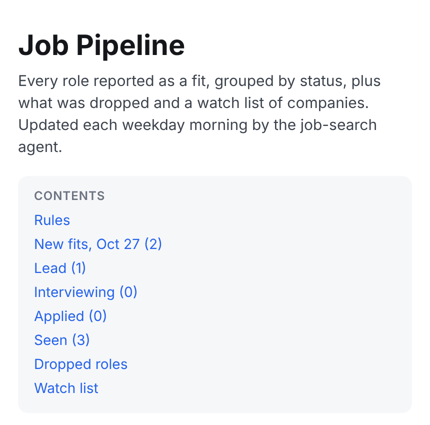
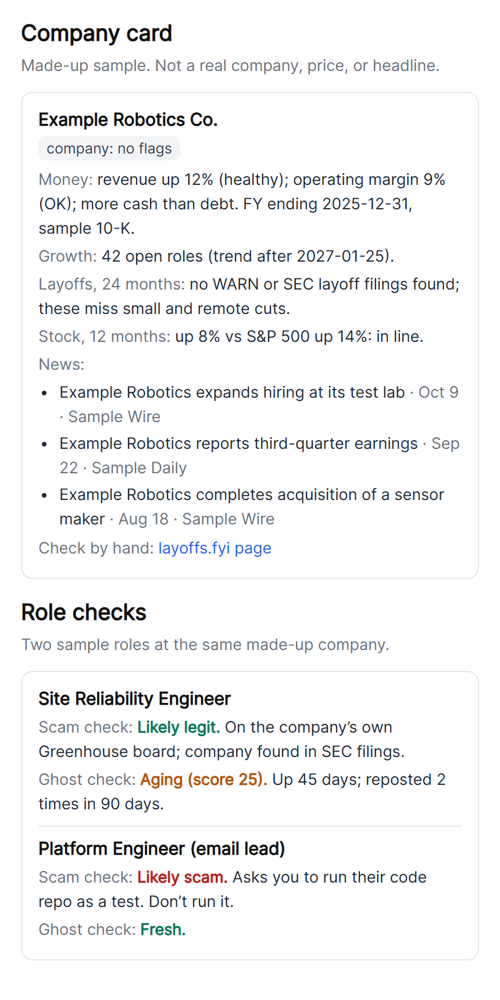

01 [Full-time work]
Platform, reliability, and AI work for employers, newest first. Employer names, code, and screenshots stay private.
AI work factory: from ticket to pull request
Designed and built a workflow that turns a ticket into a tested, self-reviewed pull request, improving reliability, velocity, and output quality.
[pipeline]
- 01Linear ticket
- 02spec
- 03implementation
- 04tests
- 05critic review
- 06gap fixes
- 07pull request
Key decisions
- LLM agents and deterministic code work together, each doing the steps it handles best.
- Every job starts as a spec generated from the ticket, and the agents implement that whole spec.
- The workflow tests its own implementation and reviews it with critic agents.
- It fills gaps and fixes the issues it finds, then opens the pull request.
- Covers software delivery, on-call management, and tooling, not only code.
- LLM agents
- Critic agents
- Agent orchestration
- Hybrid LLM + deterministic workflows
- Linear
- Pull requests
AI agents for infrastructure work
- 3x productivity with AI tooling.
- Doubled my meaningful code and review contributions in the first quarter, tripled them over the last year, and significantly reduced MTTR.
Tripled my productivity with AI tooling, without lowering quality.
Key decisions
- Created custom prompts, agent orchestration flows, specialist and critic agents, and self-improving workflows to resolve hard infrastructure issues and ship major projects faster.
- Developed a secure container sandbox that gives AI agents read-only access to cloud infrastructure and Kubernetes clusters, and lets them open pull requests safely. Agents work in parallel with no risk of accidental changes.
- Mentored the team on AI practices with Copilot and Claude, and shared my tooling and lessons alongside Terraform and policy engines.
- Claude
- Copilot
- Gemini
- Agent orchestration
- Container sandbox
Kubernetes platform reliability at 24,000+ pods
- 24,000+ pods in production clusters.
- 50%+ faster node provisioning.
Production clusters running 24,000+ pods get new nodes 50%+ faster, cost less, and take days less effort to upgrade.
Key decisions
- Reconfigured and upgraded Karpenter, cutting node provisioning time 50%+.
- Wrote Kyverno policies that enforce resource limits, requests, and best practices, reducing EKS cluster costs and node overcommitment.
- Built an auto-rollback service for problematic AMI releases on EKS. It prevents major outages on its own and notifies SREs for follow-up.
- Simplified administration and expanded policy as code, saving days of engineering effort per Kubernetes upgrade.
- Created Grafana dashboards, Prometheus and Thanos metrics, recording rules, and alerts.
- AWS EKS
- Karpenter
- Kyverno
- Grafana
- Prometheus / Thanos
Self-service infrastructure-as-code platform
Engineers deploy infrastructure on their own, with no risk to production data.
Key decisions
- Delivered and fully manage a self-service IaC platform built on gated GitHub Workflows.
- Kyverno and OPA policies check every change before it applies.
- Plans, applies, and retries run automatically, with manual triggers when an engineer needs one.
- Terraform
- GitHub Actions
- Kyverno
- OPA
6x faster CI/CD and an internal developer platform
- 6x faster CI/CD pipelines.
- 80% less upgrade toil.
- Internal developer platform adopted by all engineers.
CI/CD pipelines in a large monorepo ran 6x faster, and every engineer adopted the internal developer platform.
Key decisions
- Designed dynamic GitLab pipelines that trigger only the affected jobs.
- Built automation that pauses and resumes GitLab Runners during Kubernetes upgrades, ending deployment conflicts.
- Stabilized Terraform, stood up Vault on ECS, migrated secrets, and containerized VMs.
- Wrote RFCs for architecture changes and mentored SREs.
- GitLab CI
- Terraform
- Vault
- AWS ECS
- Kubernetes
Internal developer platform and zero-downtime Kubernetes migration
Kubernetes services moved across AWS accounts with zero downtime.
Key decisions
- Designed and built an internal developer platform.
- Migrated multi-account Kubernetes services, coordinating AWS networking and DNS for a zero-downtime cutover.
- Developed IaC tooling that automates brittle repairs, such as certificate uploads, DNS mirroring, and Artifactory migrations, preventing outages from expired certificates.
- Kubernetes
- AWS
- DNS
- Artifactory
02 [Side projects]
Built on my own time. I designed and built each one.
AI garage operations assistant and build tracker
- About 50 BDD feature files, each behavior with a passing and a failing case.
- Designed to run on Cloudflare's $5-a-month Workers plan.
Mechanics at a vehicle build and repair garage keep posting from their phones as they always have, and every build's record stays complete.


Slack → signed webhook → Cloudflare Worker → queue → AI readers on Workers AI → D1 database and R2 file storage → phone-first web board.
Key decisions
- Replaces a spreadsheet, a whiteboard, a retyped daily status doc, and a group text for vehicle builds and repairs. The build crew posts texts, photos, receipts, PDFs, and voice notes in Slack, and the garage assistant files each one to the right build. When the build is unclear or a post looks like a duplicate, it asks instead of guessing.
- Several vision models read each receipt in parallel, each field is decided by majority vote, and the arithmetic is checked. Mismatched totals, duplicate invoices, and unusual prices go to a person. Duplicates are caught in any format: a photo, a PDF, and a typed note about the same receipt are compared on what they say.
- Every write is idempotent, logged, and undoable, and nothing is hard-deleted. Corrections work in plain words, such as "move the water pump to the other truck", and invoiced records never move. Labor hours are tracked without ever editing invoiced time, and the garage leader gets a daily labor report.
- A watchdog resends any post that stalls, then alerts a person. Every deploy runs the full test suite, checks migrations, smoke-tests health, and rolls back on failure. Nightly backups get a monthly restore drill.
- Leaders get a phone-first board by build stage, build pages with tasks, parts, receipts, and photos, and a print page. Sign-in is Slack plus a passkey, with role-based permissions.
- Cloudflare Workers
- D1
- R2
- Queues
- Workers AI
- Slack API
- Cucumber BDD
pi-toolbag: CTX long-horizon focus and LLM failover for coding agents
Coding agents that stay on task for the long haul and keep working when a model provider fails.
Extensions for the Pi coding agent: CTX rebuilds working context after each compaction, and a shared failover library replays failed requests on the next model.
Key decisions
- CTX keeps a coding agent focused across context compactions without stopping it from useful exploration. It rebuilds context from typed records within a fixed token budget, with no extra model call.
- Project rules are shared across sessions only after an explicit bind that a person confirms, so an agent's passing notes never become rules on their own.
- Same-session failover switches on quota, timeout, safety errors, and stalled streams, and never on auth errors or refusals. No user action is needed.
- Usage-cap gates switch away before a model hits its limit and switch back once usage recovers.
- TypeScript
- Pi coding agent
- Vitest
- BDD
Coding-agent harness
Every coding-agent session starts with the same scoping, checks, and project rules.
Skills, lifecycle hooks, and AGENTS.md templates for xAI's Grok Build coding agent, set up by one installer.
Key decisions
- Scoping and verification skills, so each task is scoped before work starts and checked before it's called done.
- Lifecycle hooks protect context before compaction and nudge the agent to verify its work.
- AGENTS.md templates give each project the same written rules.
- An idempotent installer, so setup is safe to run again.
- Grok Build
- Agent skills
- Lifecycle hooks
- AGENTS.md
03 [Personal projects]
Agents I designed and built for my own household.
Multi-agent personal operations system
- More than 20 specialized agents, plus a daily 7 AM briefing on email, calendar, tasks, orders, weather, and job matches.
A team of AI agents runs a household's daily operations, and a person approves anything that goes out.
Router agent → specialist agents (chief of staff, research, tasks, email, notes, browser, job search) → shared report files → 7 AM briefing.
Key decisions
- Routing rules send each request to one specialist agent, and scheduled routines run without a prompt.
- Human approval is required before any email, message, or post is sent.
- A queued, lock-protected browser-automation agent (Python, Chrome DevTools Protocol, automated tests) handles sites with no API.
- A public job-board poller (Greenhouse, Lever, Ashby, Workday) and weather and nutrition pipelines retry and check themselves.
- Python
- Chrome DevTools Protocol
- browser-use
- Scheduled routines
AI job-search pipeline
- 241 tests pass.
- On a test run of one metro area's employers, it kept 48 roles and dropped 326, each with its reason.
Matching roles come straight from employers' own careers sites, each with a company card and scam and ghost-job checks. Mail replies keep each role's status current.



Careers-site job feeds → title and rule filters → scam and ghost checks → status-grouped web page. SEC, WARN, stock, and news data → company cards. Weekday mail checks → role status. Blocked sites → browser agent.
Key decisions
- Reads each employer's careers site broadly, then filters by fixed titles and rules. Covers Greenhouse, Lever, Ashby, Workday, Oracle, Phenom, Avature, and SmartRecruiters job feeds, and splits searches that pass Workday's 2,000-result cap.
- Sends only sites that block scripts to a browser agent running typesafe.ai's Jev, with spaced, backed-off requests.
- Checks mail at 6:30 AM and 4 PM CT each weekday through a read-only mail agent. It reads full threads in Inbox, Sent, Trash, and Spam, so replies update each role's status.
- Adds a company card for each employer with a kept role: financial health from SEC filings, layoffs in the last 24 months from SEC and state WARN notices, open-role trend, 12-month stock change against the S&P 500, and up to 3 recent headlines. Free sources only, and every figure carries its date and source.
- Labels every role for scam risk and ghost-job risk with fixed rules, not a model's opinion. Eight hard flags, such as a fee up front or a request to run code, mark a likely scam. No label removes a role, and every dropped role shows its reason.
- Python
- Careers-site job feeds
- Read-only mail agent
- Browser agent
- SEC and WARN filings
- Rule-based scam checks
AI-assisted puppy search
- 39 trainer and veterinary-behaviorist sources in the temperament guide.
A daily search across shelters, rescues, and breeders, with an alert when the right dog appears.


Scheduled research agent → shelter, rescue, and breeder sites → priority-ranked photo-card page and alerts. Blocked sites → browser agent.
Key decisions
- Runs every evening and on demand against one written dog profile.
- Ranks rescue and shelter dogs ahead of breeders and private listings, and alerts when a match becomes available.
- Pairs the search with a sourced guide to temperament checks at a visit.
Daily food and activity logging agents
A few chat messages and a meal photo become a complete daily note, with no forms to fill in.

Chat messages and meal photos → logging agents → one dated daily note → trends across days.
Key decisions
- Reads food and activity details from plain chat messages and meal photos, and files them under the right day.
- Estimates calories for each meal and labels them as estimates.
- Writes one note per day from a fixed template, so days compare cleanly over time.
- Agents
- Vision
- Daily notes
04 [Models I use and how]
Coding: xAI's Grok Build coding agent, run through my own sandboxed launcher, and the Pi coding agent with pi-toolbag. Pi's failover chain, in order: GLM-5.3 on Baseten, Grok through SuperGrok, Grok through the xAI API, Anthropic's Fable, Claude Opus, then Claude Sonnet.
Planning and review (personal work): Grok.
Browser agent and data-ingest decisions (personal work): typesafe.ai's Jev.
Garage assistant receipt reading (Cloudflare Workers AI): Llama 4 Scout 17B, Mistral Small 3.1 24B, and Llama 3.2 11B Vision read each receipt in parallel, and each field is decided by majority vote.
Telling photos from documents (garage assistant): Llama 3.2 11B Vision plus ResNet-50 decide whether an upload is a document to read in full or a photo to describe.
Voice notes: Whisper large-v3-turbo transcribes, with Deepgram Nova-3 as the fallback.
At work: Astra/Terra, plus Fable, Opus, and Sonnet. I'm evaluating OpenAI's Decisions model for alerts, Kubernetes events, and log lines.
05 [Stack]
Languages
- Python
- TypeScript / Node.js
- Go
- Bash
AI and agents
- Grok
- Claude
- Copilot
- GPT
- Gemini
- GLM
- Llama
- Workers AI
- Agent orchestration
- Guardrails
Cloud and platform
- Cloudflare Workers, D1, R2, Queues
- AWS EKS and ECS
- Kubernetes
- Karpenter
- Terraform
- Vault
- Kyverno / OPA
Testing and delivery
- BDD / Cucumber
- Vitest
- GitHub Actions
- GitLab CI
- Artifactory
- Auto-rollback deploys
Observability
- Grafana
- Prometheus / Thanos
- SLOs